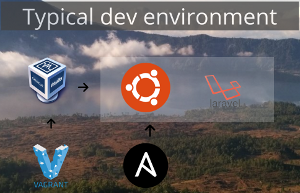

Homestead is really nice to have a development environment ready in a few minutes but it has two main problem:
Our tool have the advantage of Homestead while no having it's disadvantage. It can generate all you need to create your development environment in few minutes: the Vagrantfile and the Ansible playbook to provision your Vagrant.
Then you can use the same playbook to provision your production servers assuring you that your development and production VM will have the same configuration.
Download on githubFeel free to email us to provide some feedback on our tools or presentations